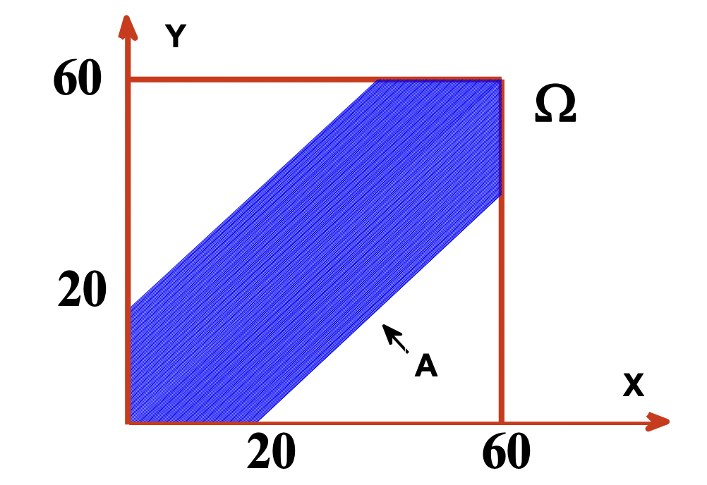
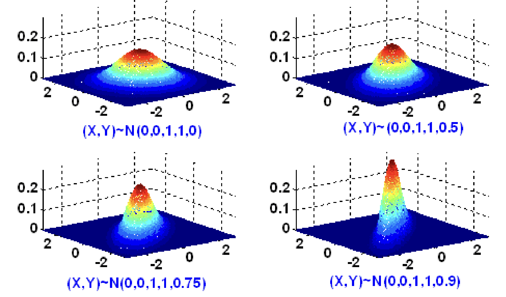
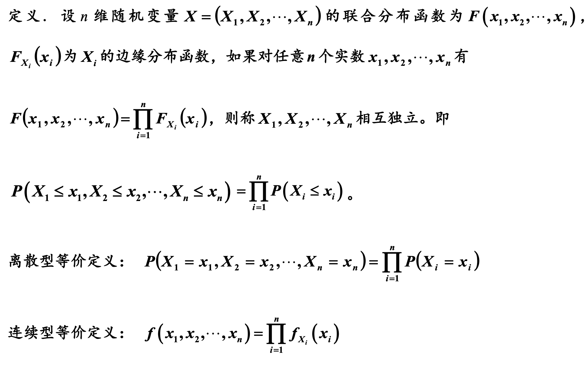

多维随机变量
对任意n个实数x1,x2,...,xn，事件{X1⩽x1},{X2⩽x2},...,{Xn⩽xn}同时发生的概率F(x1,x2,...,xn)=P(X1⩽x1,X2⩽x2,...,Xn⩽xn)称为n维随机变量X的联合分布函数。
二维联合分布函数F(x,y)性质
- 单调性: 当x1<x2时，F(x1,y)⩽F(x2,y)，当y1<y2时，F(x,y1)⩽F(x,y2)
- 有界性: 对任意x和y， 有0⩽F(x,y)⩽1, 且F(−∞,y)=x→−∞limF(x,y)=0;F(x,−∞)=y→−∞limF(x,y)=0;F(+∞,+∞)=x,y→+∞limF(x,y)=1;
- 右连续性: F(x+0,y)=F(x,y),F(x,y+0)=F(x,y)
- 非负性: 对任意a<b,c<d, 有P(a<X<b,c<Y<d)=F(b,d)−F(a,d)−F(b,c)+F(a,c)≥0
二维离散型随机变量
若X,Y只取至多可列个数对，(xi,yi)，则称(X,Y)为二维离散随机变量，Pij=P(X=xi,Y=yj)称为(X,Y)的联合分布列。
X/Yx1x2...xn...y1p11p21...pn1...y2p12p22...pn2.....................ynp1np2n...pnn.....................
其中， pij≥0,∑i=1∞∑j=1∞pij=1
边缘分布
(X,Y)为二元离散型随机变量，其中X和Y各自的分布称为边缘分布,
下表为X的边缘分布列，其中P(X=xi)=∑j=1∞P(X=xi,Y=yi)=∑j=1∞pij
XPx1P(X=x1)x2P(X=x2)......xnP(X=xn)......
下表为Y的边缘分布列，其中P(Y=yi)=∑i=1∞P(X=xi,Y=yi)=∑i=1∞pij
XPx1P(X=x1)x2P(X=x2)......xnP(X=xn)......
二维连续型随机变量
存在二元非负函数f(x,y)，使得二维随机变量(X,Y)的分布函数F(x,y)可表示为F(x,y)=∫−∞x∫−∞yf(μ,ν)dμdν则(X,Y)为二维连续型随机变量，
f(x,y)为(X,Y)的联合密度函数，f(x,y)=δxδyδ2F(x,y)
边缘密度函数 fX(x)=∫−∞+∞f(x,y)dy
边缘分布杉树 FX(x)=F(x,+∞)=∫−∞x(∫−∞+∞f(μ,ν)dν)dμ=∫−∞xfX(μ)dμ
常见多维随机变量
多项分布
(Xi,X2,...,Xn)∼M(n,p1,p2,...,pn)
设随机实验E有m个基本事件，A1,....Am, P(Ai)=Pi>0, ∑impi=1, 将E重复n次，以Xi表示n次试验中Ai出现的次数，则
P(X1=k1,...,Xm=km)=k1!k2!...km!n!p1k1p2k2...pmkm,(k1+...+km=n)
Cnk1Cn−k1k2Cn−k1−k2k3...Ckmkm=k1!(n−k1)!n!k2!(n−k1−k2)!(n−k1)!...km!km!=k1!k2!...km!n!
(x1+x2+...+xm)n=∑k1+...+km=nk1!k2!...km!n!x1k1x2k2...xmkm
例如，某产品分为一等品（A1）、二等品（A2）、三等品（A3）、不合格品（A4），各种档次的产品出现概率分别为p1,p2,p3,p4(p1+p2+p3+p4=1)。任取n件产品，各品级数目服从M(n,p1,p2,p3,p4)。
二维均匀分布
(X,Y)∼U(D)
例子：会面问题
甲、乙约定在下午 4 点至 5 点之间见面，并约定等候 20 分钟，过时即离去，求二人的会面概率。
甲、乙的到达时间(X,Y)服从0⩽x,y⩽60区域上的均匀分布

图1 甲，乙到达时间的分布
二维正态分布
(X,Y)∼N(μ1,μ2,σ12,σ22,ρ)
概率密度函数
f(x,y)=2πσ1σ21−ρ21e−2(1−ρ2)1[σ12(x−μ1)2−2ρσ1σ2(x−μ1)(y−μ2)+σ22(y−μ2)2]
其中μ1,μ2∈R,σ1,σ2>0,∣ρ∣⩽1

图2 二维正态分布不同参数密度函数图
二维正态分布的边缘分布是一元正态分布，逆命题不成立，二元随机变量(X，Y)的边缘分布均为正态，联合分布未必是二元正态
随机变量的独立性

泊松分布和二项分布的可加性质
泊松分布的可加性：若X1∼P(λ1), X2∼P(λ2), …, Xm∼P(λm), 且X1,X2,...,Xm相互独立，则X1+X2+...+Xm∼P(λ1+λ2+...+λm)
二项分布的可加性：若X1∼B(n1,p), X2∼B(n2,p), …, Xm∼B(nm,p), 且X1,X2,...,Xm相互独立，则X1+X2+...+Xm∼B(n1+n2+...+nm,p)